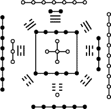
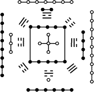
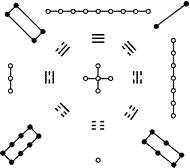
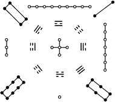

|
八经卦 |
|
|
|
一、八经卦 |
|
经卦是由阴爻和阳爻所组成的（见阴与阳），每个经卦由三个爻象所组成，就是三个爻。经卦共计八个，所以叫八经卦，分为乾、坎、艮、震、巽、离、坤、兑，其中乾、坎、艮、震是四阳，巽、离、坤、兑是四阴，并有一着口诀：乾三连、坤六断、震仰盂、艮覆碗、离中虚、坎中满、兑上缺、巽下断（见页面顶端《想学好易经，基础是重点》的左边的GIF动画）。八经卦按先天卦的次序为：乾一、兑二、离三、震四、巽五、坎六、艮七、坤八。（见下表） |
|
卦名 |
乾 |
兑 |
离 |
震 |
巽 |
坎 |
艮 |
坤 |
|
卦象 |
|
|
|
|
|
|
|
|
|
卦序 |
一 |
二 |
三 |
四 |
五 |
六 |
七 |
八 |
|
|
每一个经卦又能代表天下的不同事物和东西，我们称之为“易象”，而“易象”同样是反映易的全息性的一个方面。卦既有次序，方位等之论，亦有先后天之学，分述如下。 |
|
二、先天八卦次序 |
|
阳 |
阴 |
|
太阳 |
少阴 |
少阳 |
太阴 |
|
乾 |
兑 |
离 |
震 |
巽 |
坎 |
艮 |
坤 |
|
|
《系辞传》曰：“易有太阴，是生两仪，两仪生四象，四象生八卦。”邵子（邵康节）曰：“乾一、兑二、离三、震四、巽五、坎六、艮七、坤八。乾、兑、离、震为阳，巽、坎、艮、坤为阴，乾、兑为太阳，离、震为少阴，巽、坎为少阳，艮、坤为太阴。” |
|
三、先天八卦方位 |
|
|
|
《说卦传》曰：“天地定位，山泽通气，雷风相薄，水火不相射，八卦相错”。邵子曰：“乾南、坤北、离东、坎西、兑居东南、震居东北、巽居西南、艮居西北，所谓先天之学也”。 |
|
四、后天八卦次序 |
|
八卦分为先后天，先天前已述，此乃后天八卦，后天八卦的序数为：坎一、坤二、震三、巽四、五为中宫，乾六、兑七、艮八、离九 |
|
乾父 |
坤母 |
|
|
|
|
震长男 |
坎中男 |
艮少男 |
巽长女 |
离中女 |
兑少女 |
|
|
|
|
|
|
|
|
|
《说卦传》曰：“乾、天也，故称乎父。坤、地也，故称乎母。震一索而得男，故谓之长男。巽一索而得女，故谓这长女。坎再索而得男，故谓之中男。离再索而得女，故谓之中女。艮三索而得男，故谓之少男。兑三索而得女，故谓之少女”。 |
|
五、后天八卦方位 |
|
|
|
《说卦传》曰：“帝出乎震，齐乎巽，相见乎离，致役乎坤，说言乎兑，战乎乾，劳乎坎，成言乎艮”。邵子曰：“乾统三男于东北，坤统三女于西南，乾、坎、艮、震为阳，巽、离、坤、兑为阴”。 |
|
六、先卦卦配河图之象 |
|
 |
|
《启蒙附论》曰：“图之左方阳内阴外，即先天这震离兑乾，阳长而阴消也。其右方阴内阳外，即先天之巽坎艮坤，阴长而阳消也。盖所以象二气之交运也。” |
|
七、后天卦配河图之象 |
|
 |
|
《启蒙附论》曰：“图之，一六为水，即后天之坎位也；三八为木，即后天震巽之位也；二七为火，即后天之离位也；四九为金，即后天兑乾之位也；五十为土，即后天之坤艮周流四季而偏旺于丑未之交也。盖所以象五气之顺布也”。 |
|
八、先天卦配洛书之数 |
|
 |
《启蒙附论》曰：“洛书九数虚中五以配八卦，阳上阴下，故九为乾，一为坤。因自九而逆数之，震八、坎七、艮六，乾生三阳也，又自一而顺数之，巽二、离三、兑四，坤生三阴也。以八数与八卦相配而先天之位合矣”。
按：术家以乾配九、坤配一、离配三、坎配七，其数奇，故为阳；兑配四、震配八、巽配二、艮配六、其数偶，故为阴。 |
|
九、后天卦配洛书之数 |
|
 |
《启蒙附论》曰：“火上水下，故九为离，一为坎；火生燥土，故八次九而为艮；燥土生金，故七六次八而为兑；乾水生湿土，故二次一而为坤，湿土生木，故三四次二而为震巽。以八数与八卦相配而后天之位合矣”。
按：邵子以文王八卦为入用之位。后天之学，朱子以洛书为数之用。术家飞宫俱用后天配洛书。其法以坎一、坤二、震三、巽四、五为中宫，乾六、兑七、艮八、离九为序。刘歆曰：“八卦、九章相为表里”。张衡曰：“圣人重之以卜筮，杂之以九宫”。则所从来远矣。 |
|
十、万物类象 |
|
易象是八经卦的延伸，可代表天下的万事万物，所以又称万物类象。见下表： |
|
经 卦 |
万 物 类 象 |
|
乾 |
[天时」：天、冰、雹、霰
[地理」：西北方、京都、大郡、形胜之地、高亢之所
[人物」：君、父、大人、老人、老人、长者、宦官、名人、公门人
[人事」：刚健勇武、果决、多动少静
[身体」：首、骨、肺
[时序」：秋、九十月之交、戌亥年月之时，五金年月日时』
[动物」：马、天鹅、狮子、象
[静物」：金玉、宝珠、圆物、木果、刚物、冠、镜
[屋宿」：公厕、楼台、高堂、大厦、驿宿、西北向之居
[家宅」：秋占宅兴隆、夏占有祸、冬占冷落、春占吉利
[婚姻」：贵官之眷、有声名之家、秋占宜成、冬夏不利
[饮食」：马肉珍味、多骨、肝肺、干肉、木果、诸物之首、圆物、辛辣之物
[求名」：有名、宜随内任、刑官、武职、掌权、天使、驿官、宜向西北之任
[谋旺」：有成、利公门、宜动中有财、夏占不成、冬占多谋少遂
[交易」：宜金、玉珍宝珠贵货，易成，夏占不利
[求利」：有财，金、玉之利，公门中得财，秋占大利，夏占损财，冬占无财
[出行」：利于出行，宜人京师，利西北之行，夏占不利
[谒见」：利见大人，有德行之人，宜见贵官，可见
[疾病」：头面之疾，肺疾、筋骨疾、上焦疾、夏占不安
[官讼」：健讼，有贵人助，秋占得胜，夏占失理
[坟墓」：宜向西北，宜乾山气脉，宜天穴，宜高，秋占出贵，夏占大凶
[方道」：西北
[五色」：大赤色、玄色
[姓字」：带金旁者，行位一四九
[数目」：一四九
[五味」：辛、辣 |
|
兑 |
[天时」：雨泽、新月、星
[地理」：泽、水际、缺池、废井，山崩破裂之地，其地为刚卤
[人物」：少女、妾、歌妓、伶人、译人、巫师、奴仆婢
[人事」：喜悦、口舌谗毁、谤说、饮食
[身体」：舌、口喉、肺、痰、涎
[时序」：秋八月，酉年月日时，金年月日，二四九月日
[静物」：金刀、金类、乐器、废物、缺器之物，带口之物，毁折之物
[动物」：羊、泽中之物
[屋舍」：西向之居，近泽之居，败墙壁宅，户有损
[家宅」：不安，防口舌，秋占喜悦，夏占家宅有祸
[饮食」：羊肉、泽中之物、宿味、辛辣之物味
[婚姻」：不成，秋占可成，有喜，主成婚之吉，利婚少女，夏占不利
[生产」：不利，恐有损胎或则生女，夏占不利，宜坐向西
[求名」：难成，因名有损，利西之任，宜刑官，武职，伶官，译官
[求利」：无利有损，财利主口舌，秋占有财喜，夏占不利
[出行」：不宜远行，防口舌，或损失，宜西行，秋占有利宜行
[交易」：难有利，防口舌，有竞争，秋占有交易之财，夏占不利
[谒见」：利行西方，见有咒诅
[疾病」：口舌、咽喉之疾，气逆喘疾，饮食不餐
[坟墓」：宜西向，防穴中有水，近泽之墓，或葬废穴，夏占不宜
[官讼」：争讼不已，曲直未决，因讼有损，防刑，秋占为体得理胜讼
[姓字」：带口带金字旁姓氏，行位四二九
[数目」：四二九
[方道」：西方
[五色」：白
[五味」：辛辣 |
|
离 |
[天时」：日、电、虹、霓、霞
[地理」：南方、干亢之地，窖、炉冶之所，刚燥厥地，其地面阳
[人物」：中女、文人、大腹、目疾人、甲胄之士
[人事」：文化之所，聪明才学，相见虚心，书事，美丽
[身体」：目、心、上焦
[时序」：夏五月，午火年月日时，三二七日
[静物」：火、书、文、甲骨、干戈、槁衣、干燥之物
[动物」：雉、龟、鳌、蚌、蟹
[屋舍」：南舍之居，阳明之宅、明窗、虚室
[家宅」：安稳、平善、冬占不安，克体主火灾
[饮食」：雉肉、煎炒、烧炙之物、干脯之体、熟肉
[婚姻」：不成、利中女之婚，夏占可成，冬占不利
[生产」：易生，产中女，冬占有损，坐宜向南
[求名」：有名，宜南方之职，文官之任，宜炉冶亢场之职
[求利」：有财宜南方求，有文书之财，冬占有失
[交易」：可成，宜有文书之交易
[出行」：可行，宜动向南方，就文书之行，冬占不宜行，不宜行舟
[谒见」：可见南方人，冬占不顺，秋见文书考案才士
[官讼」：易散，文书动，词讼明辨
[疾病」：目疾、心疾、上焦病，夏占伏暑，时疫
[坟墓」：南向之幕，无树林之年，阳穴。夏占出文人，冬不利
[姓字」：带次或立人旁士姓氏，行位三二七
[数目」：三二七
[方道」：南
[五色」：赤、紫、红
[五味」：苦 |
|
震 |
[天时」：雷
[地理」：东方、树木、闹市、大途、竹林、草木茂盛之所
[身体」：足、肝、发、声音
[人物」：长男
[人事」：起动、怒、虚惊、鼓动噪、多动少静
[时序」：春二月、卯年月日时、四三八月日
[静物」：木竹、苇、乐器（竹木）、花草繁鲜之物、核
[动物」：龙、蛇、百虫、马鸣
[屋舍」：东向之居、山林之处、楼阁
[家宅」：宅中不时有虚惊，春冬吉，秋占不利
[饮食」：啼、肉、山林野味、鲜肉、果酸味、菜蔬、鲤鱼
[婚姻」：可、有成、声名之家、得长男之婚，秋占不利
[求利」：山林竹木之财、动处求财，或山林、竹木茶货之利
[求名」：有名、宜东方之任、施号发令之职、掌刑狱之官、竹茶木税课之任、或闹市市货之职
[生产」：虚惊、胎动不安、头胎必生男，坐宜向东，秋不吉
[疾病」：足疾、肝经之疾、惊恐不安
[谋旺」：可旺、可求，宜动中谋，秋占不遂
[交易」：利于成交，秋占难成，动而可成，山林、木竹茶货之利
[官讼」：健讼、有虚惊、行移取甚反复
[谒见」：可见、在宜山林之人，利见宜有声名之人
[出行」：宜行，利东方、利山林之人，秋占不宜行、但恐虚惊
[坟墓」：利于东向、山林中穴，秋不利
[姓字」：带木姓人、行位四八三
[数目」：四八三
[方道」：东
[五味」：甘、酸味
[五色」：黑青、绿碧 |
|
巽 |
[天时」：风
[地理」：东南方之地、草木茂秀之所、花果菜园
[人物」：长女、秀士、寡妇之人、山林仙道之人、僧道
[人事」：柔和、不定、鼓舞、利市三倍、进退不果
[身体」：肱、股、气、风疾
[时序」：春夏之交、二五八之时月日、三月、辰巳月日时、四月
[静物」：木香、绳、直物、长物、竹木、工巧之器、臭、鸡毛、帆、扇、臼
[动物」：鸡、百禽、山林中之禽、虫、蛇
[屋舍」：东南向之居、寺观楼台、山林之居
[家宅」：安稳利市，春占吉，秋占不安
[饮食」：鸡肉、山林之味、蔬果酸味
[婚姻」：可成、宜长女之婚，秋占不利
[生产」：易生、头胎产女、秋占损胎、宜向东南坐
[求名」：有名、宜文职有风宪之力、宜为风宪、宜茶果竹木税货之职、宜东南之任
[求利」：有利三倍、宜山之利、竹货木货之利，秋不利
[交易」：可成、进退不一、交易之利、山林交易、山林木茶之利
[谋旺」：可谋旺、有财可成，秋占多谋少遂
[出行」：可行，有出入之利，宜向东南行，秋占不利
[谒见」：可见，利见山林之人，利见文人秀士
[疾病」：股肱之疾、风疾、肠疾、中风、寒邪气疾
[姓字」：草木旁姓氏、行位五三八
[官讼」：宜和、恐遭风宪之责
[坟墓」：宜东方向、山林之穴、多树木、秋占不利
[数目」：一三八
[方道」：东南
[五味」：酸味
[五色」：青绿、碧洁白 |
|
坎 |
[天时」：月、雨、雪、露、霜、水
[地理」：北方、江湖、溪涧、泉井、卑湿之地、沟渎、池沼、有水之处
[人物」：中男、江湖之人、舟人、资贼、匪
[人事」：险陷卑下，外示以柔，内序以利，漂泊不成，随波逐流
[身体」：耳、血、肾
[时序」：冬十一月、子年月日、一、六月日
[静物」：水带子、带核之物，弓轮、矮柔之物，酒器、水具、工栋、丛棘、藜、桎梏、盐、酒
[动物」：猪、鱼、水中之物、狐、水族
[屋舍」：向北之居、近水、水阁、江楼、花酒长器、宅中混地之处
[饮食」：猪肉、酒、冷味、海味、汤、酸味、宿食、鱼、带血、掩藏、有带核之物、水中之物、 多骨之物
[家宅」：不安、暗昧、防盗，匪
[婚姻」：利中男之婚，宜北方之婚，不利成婚，不可在辰戌丑未月婚
[生产」：难产有险，宜次胎，男，中男，辰戌丑未月有损，宜北向
[求名」：艰难，恐有灾险，宜北方之任，鱼盐河泊之职，酒兼醋
[求利」：有财防失，宜水边财，恐有失险，宜鱼盐酒货之利，防遗失，防盗
[交易」：不利成交，恐防失陷，宜水边交易，宜鱼盐货，酒之交易，或点水人之交易
[谋旺」：不宜谋旺，不能成就、秋冬占可谋
[出行」：不宜远行，宜涉舟，宜北方之行，防盗匪；恐遇险阻溺之事
[谒见」：难见，宜见江湖之人，或有水旁姓氏之人
[疾病」：耳痛、心疾、感染、肾疾、胃冷、水泻、涸冷之疾、血病
[官讼」：有阴险，有失因讼，失陷
[坟墓」：宜北向之穴、近水傍之墓、不利葬
[姓字」：点水旁之姓氏
[数目」：一、六
[方道」：北方
[五味」：咸、酸
[五色」：黑 |
|
艮 |
[天时」：云、雾、山岚
[地理」：山径路近山城，丘陵、坟墓，东北方，门阙
[人物」：少男、闲人、山中人、童子
[人事」：阻隔、守静，进退不决，反背，止住，不见
[身体」：手指、骨、鼻、背
[时序」：冬春之月、十三月丑寅年月日时，七五十月日、土年月日时
[静物」：土石、瓜果、黄物、土中之物、闾寺、木生之物、藤生之瓜
[动物」：虎、狗、鼠、百兽、黔啄之物、狐
[家宅」：安稳，诸事有阻，家人不睦，春占不安
[屋舍」：东北方之居，山居近石，近路之宅
[饮食」：土中物味，诸兽之肉，墓畔竹笋之属；野味
[婚姻」：阻隔难成，成亦迟，利少男之婚，宜对乡里婚，春占不利
[求名」：阻隔无名，宜东北方之任，宜土官山城之职。
[生产」：难生，有险阻之厄，宜向东北，春占有损
[交易」：难成，有山林田土之交易，春占有失
[出行」：不宜远行，有阻，宜近陆行
[谒见」：不可见，有阻，宜见山林之人
[疾病」：手指之疾，胃脾之疾
[官讼」：贵人阻滞，官讼未解，牵联不决
[坟墓」：东北之穴，山中之穴，近路旁有石，春占不利
[数目」：五七十
[方道」：东北方
[五色」：黄
[五味」：甘 |
|
坤 |
[天时」：阴云、雾气、冰霜
[地理」：田野、乡晨、平地、西南方
[人物」：老母、后母、农夫、乡人、众人、老妇人、大腹人
[人事」：吝啬、柔顺、懦弱、众多、小人
[身体」：腹脾、肉、胃
[时序」：辰戌丑未月、未申年月日时，八五十月日
[静物」：方物、柔物、布帛、丝绵、五谷、舆斧、瓦器
[动物」：牛、百兽、牝马
[屋宿」：西南方、村店、男舍、矮屋、土阶、仓库
[家宅」：安稳、多阴气、春占宅舍不安
[饮食」：牛肉、土中之物、甘味、野味、五谷之味、芋笋之物、腹脏之物
[婚姻」：利于婚姻，宜税产之家、乡村之家，或寡妇之家，春占不利
[生产」：易产，春占难产，有损或不利于母，坐宜西南方
[求名」：有名、宜西南方或教官、农官守土之职、春占虚
[交易」：宜利交易、宜田土交易、宜五谷利、贱货、重物、布帛、静中有财、春占不利
[求利」：有利，宜土中之利，贱货重物之利、静中得财，春占无财，多中取利
[谋旺」：利求谋，邻里求谋，静中求谋，春占少遂，或谋于妇人
[出行」：可行、宜西南行、宜往乡里行、宜陆行，春不宜
[谒见」：可见，利见乡人，宜见亲朋或阴人，春不宜见
[疾病」：腹疾、脾胃之疾、饮食停滞，从而食不化
[官讼」：理顺、得众情、讼当解散
[坟墓」：宜向西南之穴、平阳之地、近田野、宜低葬，春不可葬
[姓字」：带土姓人、行位八五十
[数目」：八五十
[方道」：西南
[五味」：甘
[五色」：黄、黑 |
|
|
|